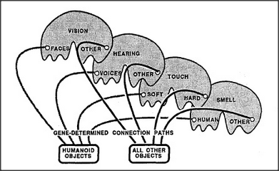
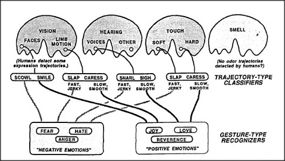
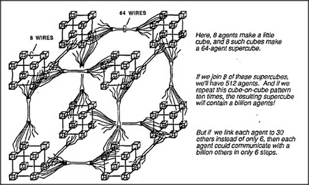
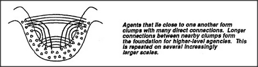
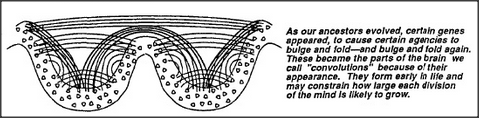
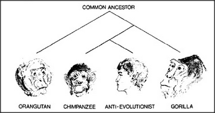

Sometimes we ask why people are so similar. At other times, we wonder why they differ so much from one to the next. Often we try to classify our differences into those with which we're born and those we later learn — and then we find ourselves arguing about which virtues are inherited, and which we acquire from experience. Most arguments about nature vs. nurture are based on two mistakes. One is to talk about intelligence as though a person's quality of mind were like a quantity one could pour into a cup. The other mistake is to assume that there is a clear distinction between what we learn and how we learn — as though experience had no effect on how we learn.
Chance plays a major role in human differences, because each of us starts out by drawing lots from among our parents' genes. A gene is a unit of heredity — a specific chemical whose structure affects some aspects of the construction of the body and the brain. We inherit each of our genes from one parent or the other, more or less by chance, so as to receive about half of each parent's genes. Within the population as a whole, each particular kind of gene has variants that work in somewhat different ways, and there are so many possible combinations of these alternative genes that every child is born unique — except in the case of identical twins, who carry identical copies of genes. One thing that makes people both so different and so similar is this: we are similar because those alternative genes are usually quite similar — and we are different because those genes are not identical.
Every cell of the body contains identical copies of all of that person's genes. But not all genes are active at the same time — and this is why the cells in our different organs do different things. When a particular gene is turned on inside a cell, that cell manufactures copies of a particular chemical (called a protein), whose structure is determined by the structure of that gene. Proteins are used in many ways. Some of them are assembled into permanent structures, some are involved in manufacturing other chemicals, and certain proteins move around in the cell, to serve as messages that alter other processes. Since certain combinations of these messages can turn other genes on and off, the gene-constructed chemicals in cells can act like small societies of agencies.
Every cell has windows in its walls and special genes that control which chemicals can enter or leave through those windows. Then, certain of those chemicals can act as messages that change the states of specific genes in other cells. Thus groups of cells can also be societies. The effects of most of those messages between cells are temporary and reversible, but some of them can permanently change the character of other cells by altering the types of messages they can transmit and receive. In effect, this converts them into other types of cells. When new types of cells are produced this way, certain of them remain in place, but other types proceed to move and reproduce — to form new layers, strands, or clumps. Inside the brain, certain types of cells emit specific chemicals that drift out like scents; this causes certain other types of mobile cells that are sensitive to those particular chemicals to sniff out those scents and track them back to their sources — leaving tubelike trails behind. These traces of the travels of those migratory cells then form the nerve-bundles that interconnect various pairs of far-apart brain-agencies. With all this activity, the embryonic brain resembles a complex animal ecology — which even includes predators programmed to find and kill the many cells that happen to reach wrong destinations.
All human brains are similar in size and shape but differ in many smaller respects because of different alternative genes. Why does the human population support so many variant genes? One reason is that genes are sometimes altered by accidents. When this happens to a gene that lies within a reproductive cell — that is, inside an ovum or a sperm — the change will be inherited. We call this a mutation. Most often, a mutant gene will simply fail to manufacture some vital chemical, and this will so badly impair the offspring that natural selection will quickly remove the mutated gene from the population. But occasionally a mutant gene will endow those offspring with some substantial advantage. Then natural selection will spread copies of that gene so widely among the population that its predecessor gene becomes extinct. Finally, a variant gene may provide an advantage only in certain circumstances; this type of mutation may spread only to a certain proportion of the population, and both the new and the old variants will continue to coexist indefinitely. The richness of this reservoir of alternative genes can determine how quickly a population adapts to changes in ecological conditions — and thus determines whether the entire species can escape extinction over longer periods of time.
Now let's return to what genes do. Not all genes turn on at once; some start early and some start late. In general, the sooner a gene starts working, the greater its effect on what comes afterward. Accordingly, it is the early-starting genes that most affect the basic, large-scale architecture of our bodies and our brains. A mutation in an early-working gene is likely to cause such a drastic alteration of an animal's basic architecture that the embryo will not survive to be born, grow up, and reproduce successfully. Accordingly, most mutations of early-working genes are swiftly weeded out of the population by natural selection. Mutations in later-starting genes tend to cause less drastic differences, hence are not so swiftly weeded out and can accumulate in the population — for example, as variations in the genes that affect the sizes of connections between various brain-agencies. Every different combination of such variant genes produces a person with a somewhat different brain.
The early-starting genes thus frame the large-scale outlines of the brain — and their uniformity explains why people are so similar on the broadest scale. These must be the genes responsible for what we call human nature — that is, the predispositions every normal person shares. Generally, the uniformity of early-starting genes is what makes all the members of each animal species seem so similar; indeed, it is partly why the earth is populated with distinct, recognizable species like lions, turtles, and people, rather than with an indistinct continuum of all conceivable animals. No human mother ever bears a cat, since that would require too many different early-starting genes.
All normal children come to recognize the same sorts of physical objects. Is that because the concept of an object is innate in the human mind? Each of us becomes attached to certain other individuals. Does this mean that the concept of person, and the notion of love, are part of our inheritance? Every human child forms realms of thought that represent the physical, possessional, and psychological. But how could genes build concepts into minds when genes themselves are merely linked-together chemicals?
The problem is that thoughts proceed on levels so far removed from those of chemicals. This makes it hard for genes, which are merely chemicals, to represent such things as objects, persons, or ideas — at least in anything like the way that strings of words express our thoughts. Then how do genes encode ideas? The answer lies in the concept of predestined learning discussed in section 11.7. Although groups of genes cannot directly encode specific ideas, they can determine the architecture of agencies that are destined to learn particular kinds of processes. To illustrate this principle, we'll outline the architecture of an agency destined to learn to recognize a human individual.
When we first introduced the concept of a recognizer, we suggested a simple way to represent a physical object in terms of properties like color, texture, size, and shape — by combining evidence from several agencies, each containing sensors especially designed to react to certain particular properties. Now we'll take another step, by dividing each of those agencies into two sections that are similar in architecture, and which both receive sensory inputs from the eyes, ears, skin, and nose. The first system is destined, as before, to learn to represent physical objects in terms of simple properties. However, because the second system's inputs come from different types of agents, it is destined to learn to represent social objects — that is, people.
Our second social object agency takes all of its inputs from sensors that detect stimuli which usually signify the presence of a person — namely, human odors, voices, and faces. Because of this — and even though the genes that assemble this system know nothing of people — this system has no alternative but to learn to represent relations among the features of human individuals. Accordingly, this agency is destined to learn to recognize people!
The large-scale outline of this agency poses no engineering mystery — but we have to ask how genes could produce the sensory detectors that the system needs to do its job. There is ample evidence that the recognition of both voices and faces does indeed take place in special sections of the brain — since certain injuries of the brain leave their victims unable to distinguish voice sounds yet still able to recognize many other kinds of sounds, while other brain injuries destroy the ability to recognize faces but leave other visual functions intact. No one yet knows just how these recognition-systems work, but let's consider each in turn.
ODOR RECOGNITION: It is easy to build recognizers for particular odors because an odor is merely the presence of a certain combination of chemicals in the air, and a specific gene can make a cell sensitive to a particular chemical. So, to build agents for recognizing the odors of particular objects or people requires little more than connecting a variety of evidence-weighing
agents to a variety of specific chemical detectors. VOICE RECOGNITION: To distinguish the sounds of a human voice requires more machinery because vocal expressions are complicated sequences of events. Machines have been built that can make such distinctions. FACE RECOGNITION: No one has yet been able to build vision machines that approach our human ability to distinguish faces from other objects — or even to distinguish dogs from cats. This remains a problem for research.
In their first few days, human infants learn to distinguish people by their odors; then, over the next few weeks, they learn to recognize individuals by sound of voice; only after several months do they start to reliably distinguish the sights of faces. Most likely we learn to make each of these distinctions by several different methods, and it is probably no accident that these abilities develop in a sequence that corresponds to their increasing complexity.
To recognize a voice or face seems hard enough; how does a child learn to recognize another person's mental state — of being angry or affectionate, for example. One way is by distinguishing trajectories. Just as we learn to interpret certain types of changes as representing the motions of objects in the physical realm, we learn to classify other types of changes as signifying mental events; these are what we call gestures and expressions. For example, to identify a certain sound to be a particular language-word, some agencies inside your brain must recognize that a certain sequence of phonetic features has occurred. At the same time, other agencies interpret sequences of vocal sounds as having significance in other realms. In particular, certain types of vocal sounds are recognized as signifying specific emotional qualities. For example, people almost universally agree on which expressions seem most angry or imperative. In general, abruptly changing sounds evoke alarm — perhaps by inducing the sort of narrowing of interest that comes with pain; in any case, sudden changes in volume and pitch demand that we attend to them. In contrast, we react to gentle sounds in ways that people label positive, as with affection, love, or reverence; the smoother time-trajectories do somehow serve to calm us down, thus frequently inducing us to set aside our other interests. It's quite the same for sight and touch; hostile persons tend to jab and shout, while friendly people speak and wave with gestures and trajectories that we perceive as signifying gentleness and tenderness. Indeed, as shown in Manfred Clynes's book, Sentics, Doubleday, New York, 1978, people show similar emotional responses to certain types of time-trajectories regardless of the sensory domain. We consistently identify certain sudden, jerky types of action patterns as indicating anger — regardless of whether these are presented as visual motions, as envelopes of voice sounds, or as pushing, shoving tactile stimuli. In the same way, we consistently identify certain other, smoother action patterns to indicate affection. Clynes concludes that at least half a dozen distinct types of trajectories are universally associated with particular emotional states. What sort of brain-machinery could cause us to react in such similar ways to such different kinds of stimuli? I propose a three-part hypothesis. First, each of our sensory-agencies is equipped with special agents that detect certain types of time-trajectories. Second, the outputs of all the agents that detect similar trajectory types in different agencies are connected, through special connection bundles, to converge upon agents in some central gesture-recognizing agency. Finally, genetically established nerve-bundles run from each gesture-recognizing agent to a particular infantile proto-specialist of the sort described in section 16. 3.
According to this hypothesis, each sensory-agency contains agents that are specialized to react to various types of temporal trajectories. For example, one kind might react only to stimuli that increase slowly and then decrease quickly; another kind might react only to signals that increase quickly and decay slowly. Inside the brain, although the agencies for hearing, sight, and touch lie far apart, the signals from agents that detect similar trajectories converge on a common agency composed of evidence-weighing agents.
Notice that the architecture of this system is so similar to that of our person-recognizing agency that the two systems could form parallel layers; however, the destiny of each central trajectory-type agent is to learn to recognize, not a particular person, but a particular type of gesture or expression. For example, one such agent might learn to react in similar ways to a snarl, grimace, or shaken fist — and thus become an anger-recognizing agent whose function is abstract in the sense of being detached from any particular class of sensations.
To be sure, recognizing anger is not the same as comprehending or sympathizing with anger — nor does merely learning to make such a recognition, by itself, teach us to identify an anger-type trajectory of another person with our own personal experience of being angry. But if our genes equip us with connections from particular central trajectory-type agents to specific proto-specialist agencies, then each particular trajectory-type recognition would tend to activate a specific kind of emotional reaction.
Some of these connections could endow us with certain empathies — for example, to feel elated upon recognizing another person's joyous gestures. Other connections could make us become defensive at signs of aggression — or even aggressive at signs of weakness and withdrawal. There are innumerable examples, in animal behavior, of particular types of gestures evoking instinctive types of reactions, as when a sudden motion toward a bird provokes a fear-reaction flight. Surely our human genes provide us with a great deal of instinctive wiring. However, far more than any other kind of animal, we also have machinery that can bridge new agencies across the older ones, so that we can learn to bury ancient instincts under modern social disciplines.
We've seen how a gene-built agency could predispose us to use trajectory types to represent emotional and other sorts of states of mind. Once this is done, higher-level agencies could use the signals from trajectory-type agents to learn to recognize and represent more complex successions of mental states. In time, those representations could be assembled into models we could use for predicting and controlling our own mental processes. This illustrates how architectures framed by genes could serve our minds as stepping- stones toward learning how to think about ourselves.
As soon as you enter a certain room, you may experience the feeling that you can directly sense its history. Many people attribute such perceptions to imaginary influences with names like intuitions, spirits, atmospheres, and vibrations. Yet very likely all such perceptions come from inside the mind of those observers, as various mental agencies accomplish clever syntheses from clues derived from features and trajectories. In my view, believing in vibrations and ghosts diminishes our capabilities for mental growth by diverting attention from the mind and attributing those abilities to imaginary entities outside ourselves.
What possible sort of brain-machine could support a billion-agent society of mind? The human brain contains so many agencies and connections that it resembles a great nation of cities and towns, linked by vast networks of roads and highways. We are born with brain centers that are specialized for every sense and muscle group: for moving every eye and limb; for distinguishing the sounds of words, the features of faces, and all sorts of touches, tastes and smells. We're born with protospecialists involved with hunger, laughter, fear and anger, sleep, and sexual activity — and surely many other functions no one has discovered yet — each based upon a somewhat different architecture and mode of operation. Thousands of different genes must be involved in laying out these agencies and the nerve-bundles between them — and those brain-growth genes must generate at least three kinds of processes. Those genetic systems first must form the clumps and layers of brain cells that eventually become groups of agents; they must dictate the inner workings of those agencies; and, finally, they must determine the sizes and destinations of the nerve-bundles that interconnect those agencies — in order to constrain who talks to whom within each mind-society.
Now every population will include some variants among the genes that shape those highways in the brain, and this must influence their bearers' potential styles of thought. A person born with unusually sparse connections between the agencies for sight and speech might develop powerful machinery in both those realms but find it hard to make direct connections between them. On the surface, that might seem to constitute a disability. However, it might also lead to an advantage — if it served to force one's higher-level agencies to seek out indirect connections that lead to more articulate ways to represent reality. Similarly, one might suppose there would be advantages in having an uncommonly large capacity for short-term memory. Yet for all we know, our evolution has disfavored that because it tends to lead to less effective use of hard-learned long-term memories. Other differences in how we think could stem from variations in connection paths. An individual whose K-lines had more branches than usual might become inclined to assemble larger-than-usual accumulations in cases where a person whose memory-agents had fewer branches might be more disposed toward building uniframes. But the same genetic disposition can lead to different styles of thought: one person who is genetically disposed toward making uniframes might succumb to the chronic use of superficial stereotypes, while another person similarly endowed might compensate by building more deeply layered agencies that lead to more profound ideas. Although each particular variation will dispose each individual toward certain traits of personality, the final effect of any gene depends upon how it interacts with the structures built by other genes — and upon countless other accidents. This makes it almost meaningless to ask which particular genes lead to good forms of thought. It is better to think of a developing brain as a forest within which many different creatures grow, in conflict and in harmony.
Let's return to the architecture of machines that could hold societies of mind. How complicated this must be depends in part upon how many agents must be active at each moment. We can clarify the problem by considering two extremes. If only a few agents need to work at any time, then even an ordinary, serial, one-step-at-a-time computer could support billions of such agents — because each agent could be represented by a separate computer program. Then the computer itself could be quite simple, provided it has access to enough memory to hold all those little programs. On the other hand, no such arrangement would suffice to simulate societies of mind in which each of billions of agents constantly interact with all the others, all at once, because that would need more wires than any animal could carry in its head. I suspect that the human brain works somewhere in between; we do indeed have billions of nerve cells working at the same time, but relatively few of them have any need to communicate with more than a small proportion of the rest; this is simply because most agents are too specialized to deal with many types of messages. Accordingly, we'll propose an architecture that lies between those serial and parallel extremes — namely, a compromise in which a typical agent has comparatively few direct connections to other agents but can still influence a great many other agents through several indirect steps. For example, we can imagine a society in which each of a billion agents is connected to thirty other agents, selected at random. Then most pairs of agents should be able to communicate through merely half a dozen intermediates! This is because a typical agent can reach thirty others in one step, a thousand others in two steps, and a million others in only four steps. Thus a typical agent could reach any of the other billion agents in only six or seven steps!
However, randomly selected connections would not be very useful, because very few randomly selected pairs of agents would have any messages that might be useful to one another. When we actually examine the human brain, we find that connections between cells are not made either uniformly or randomly. Instead, within any typical small region, we see a great many direct connections between nearby cells but only a relatively small number of bundles of connections to other regions of cells that lie farther away. Here is an idealized representation of this arrangement:
An embryonic brain might assemble such a structure by repeating a sequence of cell divisions and migrations perhaps half a dozen times. If only that were done, the resulting structure would be uselessly repetitive. However, in a real brain's growth, this underlying building plan is modified at every step by many other processes, and this produces many agencies that are similar in general form but different in specific details. Some of these gene-controlled interventions modify the properties of specific layers and clumps of cells, and this determines the internal workings of particular agencies. Other interventions affect the sizes and destinations of the nerve-bundles that interconnect particular pairs of agencies. Such highway-routing processes could be used, for example, to lead the nerves that emerge from the trajectory-type sensors in different agencies to the same central destination. This would be quite easy to arrange because the trajectory agents of similar types would tend to have similar genetic origins — and that would predispose them to be able to smell the same varieties of embryonic message chemicals and thus grow toward the same destination.
The same genetic argument can be applied to other aspects of a child's development — for example, to why all children seem to grow such similar Societies-of-More. When we discussed Jean Piaget's experiments, we left it as a mystery how children form the agencies called History and Appearance. What leads all those different minds to similar conceptions of comparisons? In section 10.7 we hinted that this might happen because similar agents like Tall and Thin originate in related sections of the brain. Consider that despite the fact that we do not know the brain-machinery for agents like Tall and Thin, we can be virtually sure that they are similar internally, because they both respond to the same sorts of spatial differences. Therefore, they almost surely have a common evolutionary origin and are constructed by the same or similar genes. Consequently, the embryonic brain cells that form these agents will tend to have similar senses of smell and are therefore likely to send out nerves that converge upon the same (or similar) agencies. From this point of view, the formation of a Spatial agency on which such properties converge need not be an unlikely chance event, but could be virtually predestined by inheritance.
Papert's principle requires many agencies to grow by inserting new layers of agents into older, already working systems. But this poses a problem because, once brain cells reach maturity, they no longer have much mobility. Consequently, adding new layers to old agencies must involve using brain cells in other locations. As far as we know, the only way this could be done is by using connections already available in the neighborhood of the original agency. Here's one way embryonic cells could provide frameworks for future multilayered mind-societies:
Any agency that is potentially capable of expanding to assimilate a lifetime of experience would need more space than any clump or layer of cells could provide in any compact neighborhood. This must be why the cerebral cortex — the newest and largest portion of the brain — evolved its convoluted form.
If the connections in the cortex of the brain develop this way, through sequences of cell migrations, it could provide each local neighborhood with potential access to several other areas, through fanlike bundles and arrays of nerves. I have the impression the human cortex becomes thus folded upon itself perhaps five or six times, so that agents in each neighborhood have potential access to several other levels of convolution. This makes it possible for a typical agent to become connected to millions of other agents through only a few indirect connections. Presumably, only a small minority of cells ever actually acquire many such connections for their own exclusive use; however, such an arrangement makes any particular group of cells potentially capable of acquiring more significance — for example, by gaining control of a substantial bundle of connections that comes to represent some useful microneme. In its evolutionary course of making available so many potential connections, the human brain has actually gone so far that the major portion of its substance is no longer in its agencies but constitutes the enormous bundles of nerve fibers that potentially connect those agencies. The brain of Homo sapiens is mainly composed of cabling.
Many people seem to think that living things are born endowed with built-in instincts to survive. And certainly all animals do many things to stay alive. They build defenses against threats; they reproduce at any cost; they shy away from extremes of cold or heat, and from unfamiliarity. Now it usually is sensible, when one sees similarities, to seek some common cause for them. But I'll argue that it's usually wrong to seek a common force. There are many different reasons why animals do many things that help keep them alive — and, as we'll see, there is even a reason why there are so many different reasons. But to attribute this to any single, central force or to some basic, underlying survival instinct is as foolish as believing in special powers that attract corpses to cemeteries or broken cars to scrapyards.
No animal requires any central reason to survive, nor does the process of evolution itself require any reason to produce all those survival aids. On the contrary, evolution's versatility stems from its very lack of any fixed direction or constraint that might restrict its possibilities.
To understand why animals survive, one must see evolution as a sieve — that only passes through its mesh those animals who leave more offspring than the rest.
Many people also think that evolution favors life — although it is a painful fact that most mutated animals must die before they reproduce. But hindsight makes us tend to count only the survivors we see, while overlooking all the misfits that have disappeared; it is the same mistake that one might make from looking only at the sky — to then conclude that all the animals were birds. The animals we see today are precisely those whose ancestors accumulated a great many survival aids — and that is why so much of their behavior seems directed toward promoting their welfare — if only in the surroundings in which their ancestors evolved. It is an illusion that all those accumulated mechanisms have anything in common; actually, that seeming uniformity has no coherence of its own: it is nothing but the shadow of that evolutionary sieve. The myth of an underlying survival instinct explains nothing that cannot better be explained without it, and blinds us to the fact that each of those survival aids may exploit an entirely different mechanism.
I certainly don't mean to deny that people learn to love life and to fear death. But this is no simple matter of obeying some elemental instinct. It involves the development over many years of elaborate societies of concepts. Nor do I mean to say that people are born without any instincts at all and must learn everything from experience. On the contrary, we start with many built-in fragments of machinery, and these predestine us to learn to shy away from diverse forms of pain, discomfort, insecurity, and other forms of bodily and mental harm. But compared to those instinctive fears, the state of nonexistence we call death is a far more strange and difficult idea, of which no infant can conceive.
Could animals have evolved as they did, if nature had no sense of goal? A century ago, the world of biologists split in two on one side stood the evolutionists, who held that animals evolve through nothing more than accidents of chance. Their antagonists were called the teleologists; they disbelieved that such excellent animals could evolve without any purposeful guidance. The evolutionists turned out to be right, for now we can watch small animals and plants evolve before our very eyes and, at a correspondingly slower pace, see similar developments in creatures that have longer lives. In fact, we can actually observe how random accidents to genes lead to the selective survival of particular individuals in various environments — without the faintest reason to suspect that any goals must be involved. So why do so many people feel that evolution must have purposes? I suspect that this belief is based on combining a sound insight about problem solving with an unsound image of how evolution works. For example, common sense tells us that a person might never hit upon a design for a flying machine entirely by trial and error, without having any goals or purposes. This leads one to suppose that nature, too, must be subject to that same constraint. The error comes from thinking of nature as being concerned with such problems as finding a way to make animals fly.
The trouble is that this confuses uses with purposes. For example, suppose one asked how birds evolved, while thoughtlessly assuming that feathers and wings evolved exclusively for use in flight. One would be confronted with a formidable problem, since any organ as complex as a wing would require too many different genes to ever appear by random chance.
So long as one's mind is fixed on flight, one might feel that the only solution is to find some flight advantage in each and every earlier stage that merely produced a protofeather or protowing too small and weak for actual flight. This is why so many antievolutionists demand that evolutionary advocates must fill in every imagined gap along a direct path toward a specified goal. However, once we abandon that fixed idea, it is easier to see how various intermediate developments could have provided those animals with advantages quite unrelated to flying. For example, the early ancestors of birds could have accumulated genes to manufacture various sorts of feathered appendages that helped to wrap those protobirds in body cloaks that kept them warm. This sort of fortuitous preparation unrelated to any goal of flight would have made it much more likely that other accidents, perhaps millions of years later, might have brought a few such elements together to lend some genuine aerial advantage to an animal already prone to making leaps.
Incidentally, I do not mean to say that evolutionary processes must by their nature be devoid of purposes. We can actually conceive of how machinery could exist inside an animal, to purposefully direct some aspects of its evolution in much the way a farmer can promote the evolution of chickens that bear more meat or sheep that grow more wool. Indeed, the reproductive machinery inside our cells has already evolved so as to produce variations that are more likely to be useful than would otherwise occur by purely random chance; this idea is explained in a brilliant essay by Douglas Lenat, entitled The role of Heuristics in learning by Discovery, in Machine Learning: An Artificial Intelligence Approach, edited by R. Z. Michalski, J. J. Carbonell, and T. M. Mitchell; Tioga Publishing Co., Palo Alto, Calif., 1983. It is even conceivable that our genetic systems might even contain some forms of difference-engine-like machinery that, over very long periods of time, generate variations in a somewhat purposeful manner. To be sure, this is mere speculation, since no such system has yet been discovered.
In any case, one aftermath of the controversy with teleologists was that many scientists in other realms became so afraid of making similar mistakes that the very concept of purpose became taboo throughout science. Even today, most scientists regard it as an abomination to use anthropomorphic or intentional language in connection with anything but persons or higher animals. This burdened the science of psychology with a double-barreled handicap. On one side, it made psychologists regard many of their most important problems as outside the scope of scientific explanation. On the other side, it deprived them of many useful technical ideas — because such concept-words as want, expect, and recognize are among the most effective ever found for describing what happens in human minds. It was not until the cybernetic revolution of the 1940s that scientists finally realized there is nothing inherently unscientific about the concept of goal itself and that attributing goals to evolution was bad not because it was impossible, but simply because it was wrong. Human minds do indeed use goal-machinery, and there is nothing wrong with recognizing this and bringing technical theories about intentions and goals into psychology.
The hardest thing to understand is why we can understand anything at all. —Albert Einstein
What hope is there for any human mind to understand a human brain? No one could ever memorize the whole of all its small details. Our only hope is in formulating their principles. It wouldn't be much use, in any case, to know how each separate part works and how it interacts with the rest — because that simply isn't practical. Even if you knew all those details, if someone asked you to describe — in general terms — how brains work and how they change, you would have no way to reply.
We usually like to think in positive terms about how various parts of systems interact. But to do that, we must first have good ideas about which aspects of a system do not interact — since otherwise there would be too many possibilities to consider. In other words, we have to understand insulations before we can comprehend interactions. To put this in a stronger form: No complicated society would actually work if it really depended on interactions among most of its parts. This is because any such system would be disabled by virtually any distortion, injury, or environmental fluctuation. Nor could any such society evolve in the first place.
The science of biology was itself shaped by the discovery of insulations. Plants and animals were scarcely understood at all until it was found that they were made of separate cells. Then little more was learned so long as scientists thought of cells as bags of fluid within which countless chemicals could freely interact. Today we know that cells are more like factories, containing systems that are kept apart by sturdy walls, with doors that open only to those substances that bear the proper keys. Furthermore, even within these compartments, most pairs of chemicals cannot interact except by permission of particular genes. Without those insulations, so many chemicals would interact that all our cells would die.
For the purposes of this book, I have emphasized highly insulated systems — that is, mechanisms in which different functions are embodied in different agents. However, it is important to put this in perspective. For example, in chapter 19, we drew a sharp distinction between memorizers and recognizers; this made it easy to explain those ideas. However, in section 20.9 we mentioned very briefly the idea of a distributed memory, in which both those functions are combined in the same network of agents. Now I do not want the reader to take the brevity of that discussion to suggest the subject is not important. On the contrary, I suspect that most of the human brain is actually composed of distributed learning-systems and that it is extremely important for us to understand how they can work. It is possible to combine even more functions; for example, John Hopfield has demonstrated a single distributed network that not only combines memory and recognition, but also correctly yields an entire memory from any subpart of sufficient size — in other words, an agency that closes the ring, much as described in section 19.10. See Hopfield's article in the Proceedings of the National Academy of Science, 79, p. 2554, 1982, or the book Parallel Distributed Processing by D. E. Rumelhart and J. L. McLelland, M.I.T. Press, 1986.
The advantages of distributed systems are not alternatives to the advantages of insulated systems; the two are complementary. To say that the brain may be composed of distributed systems is not the same as saying that it is a distributed system — that is, a single network in which all functions are uniformly distributed. I do not believe any brain of that sort could work, because the interactions would be uncontrollable. To be sure, we have to explain how different ideas can become connected to one another — but we must also explain what keeps our separate memories intact. For example, we have praised the power of metaphors that allow us to combine ideas from different realms — but all that power would be lost if all our metaphors got mixed! Similarly, the architecture of a mind-society must encourage the formation and maintenance of distinct levels of management by preventing the formation of connections between agencies whose messages have no mutual significance. Some theorists have assumed that distributed systems are inherently both robust and versatile, but actually those attributes are likely to conflict. Systems with too many interactions of different types will tend to be fragile, while systems with too many interactions of similar types will be too redundant to adapt to novel situations and requirements. Finally, distributed systems tend to lack explicit, articulated representations, and this makes it difficult for any such agency to discover how any other such agency works. Thus, if distributed memory-systems are widely used within our brains, as I suspect they are, that could be yet another reason for the shallowness of human consciousness.
What are the origins of human thought? Today, we're almost sure that our closest living relatives branched out according to the diagram below. It shows that none of the species that still exist are directly descended from any of the others, but that they all share common ancestors, now long extinct.
How different are we human beings from all the other animals? We recognize how similar those various brains and bodies are. But in view of our exceptional abilities to speak and think, we certainly seem to be unique. Could chimpanzees or gorillas ever learn to speak the way we do? Experience has shown that these wonderful animals can indeed learn to make connections among hundreds of different words and ideas, enabling them to produce speechlike strings of symbol- signs for expressing Trans-actions such as Put the candy into the box. However, the same experiments appear to show that these animals find it much more difficult to construct language-strings in which the terminals of certain frames are filled with other filled-in frames. In other words, no one has succeeded in teaching these animals to use expressions that involve interruption clauses, such as Put the candy that is in the pail into the box. To be sure, our inability to teach such things does not prove that these animals are inherently incapable of them. Still, no one can doubt that we have capabilities our ancestors did not possess. What sorts of brain developments could have given rise to our new and mighty forms of thought? Here are some possible candidates:
The capacity to attach new K-lines to old ones enabled us to build hierarchical memory-trees. The availability of more versatile temporary memories enabled us to pursue subgoals and to tolerate more complicated kinds of interruptions. The evolution of paranomes — that is, of isonomes that bridge across multiple realms — enabled us to examine the same problem from several viewpoints.
The emergence of additional layers of agents allowed each child to grow through more stages of development.
None of those advances by itself would seem to pose any special evolutionary difficulty. But what could have caused so many changes to have appeared so rapidly? Our ancestors diverged from their relatives, the gorillas and the chimpanzees, only a few million years ago, and our human brains have grown substantially in only the last few hundred thousand years. Little is known of what happened in that interval because we have found very few fossil remains of our ancestors. (This could be partly because their population was never very large but could also be because they had become too smart to permit themselves to be fossilized.) The evolutionary interval was so brief that most of our genes and brain structures remain nearly the same as those of the chimpanzees. Was it merely an increase in the brain's size and capacity that produced our new abilities? Consider that, by itself, an increase in the size of the brain might only cause the disadvantage of mental confusion and the inconvenience of a heavier head. However, if we first evolved significant advances in the ability to manage our memories, we could then take advantage of more memory. Similarly, inserting new layers of agents into old agencies might only lead to bad results — unless this were preceded by mechanisms for using such layers as middle- level managers without disrupting older functions. In other words, our evolution must have worked the other way: first came enhancements in abilities that made it feasible for us to manage larger agencies. Then, once we had the capability for using more machinery, natural selection could favor those who grew more massive brains.